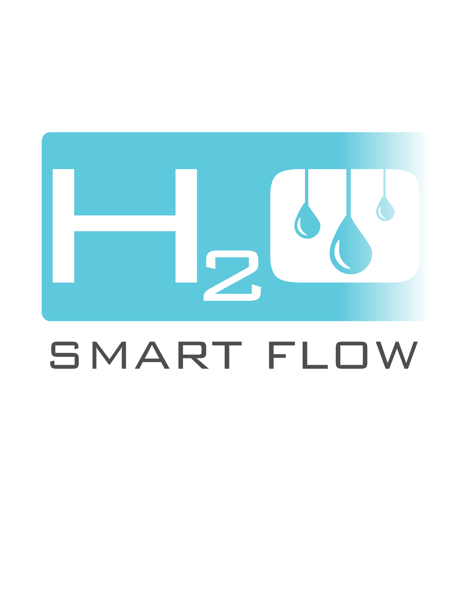

<!--
Create tabs with an icon and label, using the tabs-positive style.
Each tab's child <ion-nav-view> directive will have its own
navigation history that also transitions its views in and out.
-->
&nbsp&nbsp&nbsp&nbsp&nbsp&nbsp&nbsp&nbsp&nbsp
<br><br><br><br>

<ion-tabs class="tabs-icon-bottom tabs-color-active-positive">


<!-- Chats Tab -->
  <ion-tab  title="Home" icon-off="ion-home" icon-on="ion-home" href="#/tab/chats">
    <ion-nav-view name="tab-chats"></ion-nav-view>
  </ion-tab>

  <!-- Dashboard Tab -->
  <ion-tab title="Monitor" icon-off="ion-ios-paper" icon-on="ion-ios-paper" href="#/faucet">
    <ion-nav-view name="monitor"></ion-nav-view>
  </ion-tab>


</ion-tabs>
